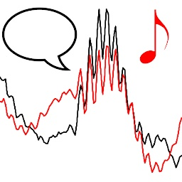

Youtube has a quite good search functionality based on video titles, descriptions and maybe even subtitles but it doesn't go into actual video contents and provide accurate timestamps for users' searches. An youtuber "Agadmator" has a very popular channel (1.1 million subscribers, 454 million video views at the time of writing) which showcases major chess games from past and recent tournaments and online games. Here a search engine is introduced which analyzes the videos, recognizes chess pieces and builds a database of all of the positions on the board ready to be searched. It keeps track of the exact timestamps of the videos in which the queried position occurs so it is able to provide direct links to relevant videos.
I am a beginner online chess player myself, having started in December 2020 at Chess.com (≈1200 rating in 10 min rapid) thanks to the "casual" PogChamps tournament. I had followed Agadmator for a long time before this event, and decided to finally put some moves on the board myself. The search engine is hosted as a single-page-app at AWS S3, written in ClojureScript (Reagent) but relying on pre-calculated data structure generated by Python and Keras.
The first step was downloading all the videos form Youtube, which was very easy thanks to youtube-dl. You can get the list of video ids by youtube-dl -j --flat-playlist $URL and use youtube-dl -o "id_$ID.webm" -f $FORMAT "https://www.youtube.com/watch?v=$ID" to download them. It is noteworthy that $ID can start with a -, so it is good to prefix file names with something to avoid cli args confusion or make sure each call has -- at an appropriate place. File size can be minimized by using 720p video streams, having $FORMAT code either 136 or 247. Agadmator has been doing videos for a long time, and apparently Youtube has been changing codecs behind the scenes so one must chech that in which format each video exists. Also these videos do not contain audio, if you wish to include it you can download file formats 249, 251 or 140 of low-quality streams. Video and audio were then compressed further by ffmpeg and the video was reduced to 4 frames per second by a command like ffmpeg -nostats -loglevel error -hwaccel cuvid -i "$vid.v.webm" -c:v hevc_nvenc -rc vbr_hq -qmin:v 28 -qmax:v 30 -x265-params range=full -dst_range 1 -pix_fmtyuv420p -movflags faststart -an -r 4 -vf scale=1280:720 "$vid.mp4". Audio was compressed by ffmpeg -nostats -loglevel error -i "$vid.a.webm" -codec:a libmp3lame -af aresample=22000 -b:a 16k -ac 1 "$vid.mp3" and these are then merged into a single file via ffmpeg -nostats -loglevel error -i "$vid.mp4" -i "$vid.mp3" -c:v copy -c:a copy -y "../videos/$vid.mp4". In total about 700 hours of content was downloaded but it takes only 20 GB of disk space.

The first hassle was to crop the chess board from the video, and this cannot be hard-coded since Agadmator has used two different layouts in his videos (Figure 1). Each video was classified to the old and new formats based on the 10th frame of the video (at 4 fps), but actually recently he has been doing some introduction at the beginning of the video which spoils this simple logic. Luckily when in doubt we can guess that the video uses the new layout, or hard-code the class of the few problematic ids. Also some videos aren't a typical chess game analysis at all and must be skipped.
The video classifier was trained by grabbing the 10th frame, resizing it to a small 160 × 90 resolution and cropping a 77 × 86 area from it. There is also some noise added to this cropping process, to make the model more resilient of minor deviations of Agadmator's layout between videos. These cropped regions were then used to train an 1D autoencoder. Example crops and their autoencoder outputs are shown in Figure 2.
The autoencoder has a quite basic architecture: a sequence of convolutions and pooling layers bring the image down to a smaller size, final few dense layers crush it into one or two dimensions, and a stack of dense layers progressively bring it back to the original resolution. The embedding layer has tanh activation which limits the range between -1 and 1, and the final layer has sigmoid which limits the RGB output between 0 and 1. I have found that relu activation works well on convolutional layers, but elu has more "flexibility" on regression-type roles at dense layers. Actually depending on the magnitude of the input signal and the layer's weights it can smoothly "interpolate" between linear and relu-like activation.
This architecture wasn't optimized that much, since it needs only to be good enough for this purpose. (Sorry the blog is lacking syntax highlight for non-PHP content. The PDF version is prettier, and I must remind you that it is generated directly by LaTeX.)
- enc_dim = 1
- enc = Dense(enc_dim, activation='tanh')
- model = Sequential([
- Input(X.shape[1:]),
- Conv2D(16, 3, activation='relu'), BN(), AveragePooling2D(2),
- Conv2D(32, 3, activation='relu'), BN(), AveragePooling2D(2),
- Conv2D(64, 3, activation='relu'), BN(), AveragePooling2D(2),
- Conv2D(64, 3, activation='relu'), BN(),
- Flatten(),
- Dense(64, activation='elu'), BN(),
- Dense(32, activation='elu'), BN(),
- Dense(8, activation='elu'), BN(),
- enc,
- Dense(8, activation='elu'), BN(),
- Dense(32, activation='elu'), BN(),
- Dense(64, activation='elu'), BN(),
- Dense(256, activation='elu'), BN(),
- Dense(np.prod(X.shape[1:]), activation='sigmoid'),
- Reshape(X.shape[1:])
- ])
Although we are working on a quite low resolution, the model has 5.3 million parameters. This is mainly due to the last dense layer which expands the representation from 256 to 77 × 86 × 3 = 19866 dimensions.
- _________________________________________________________________
- Layer (type) Output Shape Param #
- =================================================================
- conv2d_16 (Conv2D) (None, 75, 84, 16) 448
- batch_normalization_44 (Batc (None, 75, 84, 16) 64
- average_pooling2d_12 (Averag (None, 37, 42, 16) 0
- conv2d_17 (Conv2D) (None, 35, 40, 32) 4640
- batch_normalization_45 (Batc (None, 35, 40, 32) 128
- average_pooling2d_13 (Averag (None, 17, 20, 32) 0
- conv2d_18 (Conv2D) (None, 15, 18, 64) 18496
- batch_normalization_46 (Batc (None, 15, 18, 64) 256
- average_pooling2d_14 (Averag (None, 7, 9, 64) 0
- conv2d_19 (Conv2D) (None, 5, 7, 64) 36928
- batch_normalization_47 (Batc (None, 5, 7, 64) 256
- flatten_4 (Flatten) (None, 2240) 0
- dense_37 (Dense) (None, 64) 143424
- batch_normalization_48 (Batc (None, 64) 256
- dense_38 (Dense) (None, 32) 2080
- batch_normalization_49 (Batc (None, 32) 128
- dense_39 (Dense) (None, 8) 264
- batch_normalization_50 (Batc (None, 8) 32
- dense_36 (Dense) (None, 1) 9
- dense_40 (Dense) (None, 8) 16
- batch_normalization_51 (Batc (None, 8) 32
- dense_41 (Dense) (None, 32) 288
- batch_normalization_52 (Batc (None, 32) 128
- dense_42 (Dense) (None, 64) 2112
- batch_normalization_53 (Batc (None, 64) 256
- dense_43 (Dense) (None, 256) 16640
- batch_normalization_54 (Batc (None, 256) 1024
- dense_44 (Dense) (None, 19866) 5105562
- reshape_4 (Reshape) (None, 77, 86, 3) 0
- =================================================================
- Total params: 5,333,467
- Trainable params: 5,332,187
- Non-trainable params: 1,280
The encoder model is constructed simply by enc_model = Model(model.input, enc.output). The encoder puts each image type into a very distinct value range, as can be seen at figures 3 and 4. Actually in addition to the input's encoded value, whether it is an outlier can be also detected from the representation error between the input and output image but this was not implemented. Due to random initialization the network converges always to a different representation for old and new types of boards. Anyway, in this case "bright" outlier inputs are in the range of -1 to -0.5, -0.5 to -0.4 correspond to the old layout, -0.2 all the way to 0.7 are new layouts and from 0.7 onwards they seem to be darker outliers.
Once this is done all relevant videos can be cropped and resized into a standard resolution. The next step is to identify the pieces (and pawns) on the board. This isn't as trivial as it might sound (I indeed expected this to be easy!), because there are all kinds of graphics on the board and pieces move over each other. A representative sample of pieces on the board (and empty squares) was collected at an resolution of 42 × 42 each. This was done by going through videos' frames and first dropping near-dubplicate frames.
A buffer of 256 pieces was kept, and a new candidate piece was not added to the buffer if it was too similar to an already existing one. This ensures that the collection doesn't have too much redundant samples, which is especially important in this case since the pieces do not move on the board most of the time. This results in 204 stored buffers, each having 256 crops so in total there were 52k crops stored. Three buffers are shown in Figure 5.
Many crops are "polluted" by having a red background, having a yellow arrow going across it or both. These are a very useful features of the chess board UI, used to highlight critical squares, moves and piece protections. These make more sense in the context of a complete board, as seen in Figure 6.
This collection of unlabelled data wasn't much use for the purpose of identifying pieces on the board. But manual labeling is very tedious, so an initial batch of distinct images was exported by running them through a new autoencoder (not encoding full chess boards, only individual cropped squares) and identifying a few hundred distinct images. These are then labeled manually and are run through the first supervised neural network. Since we have very little data, the first network has to be quite simple to avoid overfitting. Of course we can use some data augmentation in terms of random translation, zooming and rotation but these do not correspond well to the kind of obstructions we have in the real dataset. All versions of the network had the traditional "convolution → dense → softmax" architecture
So the initial dataset is used to train a network, and it is used to do forecasts. Since the last activation layer is softmax, its outputs kind of correspond to class probabilities. And we can this identify the inputs for which the network was most unsure that to which class it belongs to. These samplex are then exported, manually labelled and this process is iterrated until the validation error is satisfactory or the manual laborer is exhausted. In total 4200 images were classified. The dataset has a quite strong class impalance, 28.4% of them is "partial" but only 2.1% are of "white_king" since those were the most difficult and easiest classes. It would be interesting to re-visit this with a semisupervised learning method, but this will do for now. Here is a reasonable network architecture:
- dim, kernel, d, rot, zoom = 10, 9, 0.1, 10 / 360, 0.1
- model = Sequential([
- Input(X.shape[1:]),
- preprocessing.RandomRotation(rot),
- preprocessing.RandomZoom(zoom),
- Conv2D(dim, kernel, activation='relu'), D(d), BN(),
- Conv2D(dim, kernel, activation='relu'), MaxPooling2D(2), D(d), BN(),
- Conv2D(dim, kernel, activation='relu'), BN(),
- Flatten(),
- Dense(16, activation='elu'), BN(),
- Dense(n_cls, activation='softmax')
- ])
Model's summary was the following:
- _________________________________________________________________
- Layer (type) Output Shape Param #
- =================================================================
- random_rotation_2 (RandomRot (None, 38, 38, 3) 0
- random_zoom_2 (RandomZoom) (None, 38, 38, 3) 0
- conv2d_150 (Conv2D) (None, 30, 30, 10) 2440
- dropout_4 (Dropout) (None, 30, 30, 10) 0
- batch_normalization_398 (Bat (None, 30, 30, 10) 40
- conv2d_151 (Conv2D) (None, 22, 22, 10) 8110
- max_pooling2d_2 (MaxPooling2 (None, 11, 11, 10) 0
- dropout_5 (Dropout) (None, 11, 11, 10) 0
- batch_normalization_399 (Bat (None, 11, 11, 10) 40
- conv2d_152 (Conv2D) (None, 3, 3, 10) 8110
- batch_normalization_400 (Bat (None, 3, 3, 10) 40
- flatten_38 (Flatten) (None, 90) 0
- dense_234 (Dense) (None, 16) 1456
- batch_normalization_401 (Bat (None, 16) 64
- dense_235 (Dense) (None, 15) 255
- =================================================================
- Total params: 20,555
- Trainable params: 20,463
- Non-trainable params: 92
Eventually the validation accuracy was about 85%, but this isn't as bad as it sounds. An extra test was run, in which only 50% of data was used for training and the other 50% for validation. Forecast accuracy results of the validation set are shown in Figure 7. As expected the most difficult class to predict was the "partial" class, see Figure 8 for examples. Basically they have two overlappign pieces, which occurs when a piece is being captured. It is hard to set a threshold when the image should be classified as two distinct pieces or just one dominant one. However this distinction isn't important for this project's main purpose, since the square will be correctly classified once capture is 100% done and the situation is stable. An other tricky one is the "empty" class, when a piece is being moved to the square. In this experiment the precision (percentage of correctly labelled classes, or the diagonal of the confusion matrix) was respectable 70 - 90%.
Empty squares aren't trivial either, because when a piece is being moved to it there comes a point when the correct classificaiton is "partial". Several examples are shown in Figure 9. Again the distinction between the two isn't crucial in the end, since it will be correctly labeled once the piece is dropped on the board and the situation is stable.
Examples of black chess pieces (and pawns) are shown in Figure 10. It shows a variety of piece's positions within the crop, obstructions by yellow arrows, varying backgrounds etc. Examples of white pieces (and pawns) are shown in Figure 11.
The final odd class is the "other", samples are shown in Figure 12. Basically it consists of anyting not related to the chess board, which occur when Agadmator is showing other content related to the game he is describing. The top left example is an exception, it is a white rook on a completely white background. This acutally happens on the board when a white pawn is being promoted, and there is a menu to choose which piece you want. I had these as a separate label in the training data but decided to combine them with "other" since the distinction isn't important in this case.
Once this network is successfully trained as well we are done! We have a pipeline which downloads a video from Youtube, compresses it to lower bitrate and FPS, detect whether it is the new or old layout and crop it accordingly and identify all pieces (and empty squares) on the board. This is actually just 300 - 400 lines of code, but naturally this involved lots of hyper-parameter tuning and other problem solving. The video is processed by loading cropped frames in batches and passing through the classifier network. Actually the previously described model processes only one 38 × 38 × 3 input image, but as we know the chess board consists of a 8 × 8 grid of these. Luckily it is trivial to build a "combined" network which takes a 304 × 304 × 3 input, crops it into 64 38 × 38 × 3 squares and passes them to the single-square model. The result is then concatenated into a single 15 × 8 × 8 output, corresponding a class probability for each square out of the 15 classes (6 white pieces, 6 black pieces, "empty", "partial" and "other").
So a batch of 32 frames results in an output of size 32 × 15 × 8 × 8, to which we can apply numpy.argmax to find the most likely classification for each of the 32 × 8 × 8 squares. Once the full video is processed we have a Numpy array of shape n × 8 × 8, each item having a value between 0 and 14. (since there are 15 classes) We know that to which timestamp each sample corresponds to simply based on the constant FPS of the video. A consecutive "runs" of these classes are then stored into a JSON file in a timeline-like data structure. This is the smallest data file from a video titled Merry Christmas Chess Puzzle to Brighten Your Day:
- {
- "id": "6qZDMNl8yXA",
- "title": "Merry Christmas Chess Puzzle to Brighten Your Day :)",
- "black_bishop": {
- "b8": [[0.00, 1.85], [2.23, 2.55]],
- "f4": [[2.08, 2.10]]
- },
- "black_king": {
- "a8": [[0.00, 2.55]]
- },
- "black_pawn": {
- "a6": [[2.42, 2.55]],
- "a7": [[0.00, 2.08], [2.27, 2.55]],
- "b7": [[0.00, 2.27], [2.29, 2.31]]
- },
- "white_king": {
- "c8": [[0.00, 2.55]]
- },
- "white_pawn": {
- "b6": [[0.00, 2.31]],
- "b7": [[2.45, 2.55]]
- },
- "white_rook": {
- "a1": [[2.24, 2.29]],
- "a6": [[1.85, 2.08], [2.31, 2.41]],
- "a7": [[2.10, 2.23]]
- }
- }
Each number represents a timestamp in minutes, for example we can see that the black king spent the entire game at a8 but a black bishop spent only (2.10 - 2.08) * 60 = 1.2 seconds in f4. (Actually if you check the video it stays there from 2:04 to 2:12, I should do some debugging to see what went wrong here. At least it wasn't misclassified as any other piece between 2.10 - 2.20 (2:06 - 2:12).)
The application doesn't use that format though, instead it uses a few tricks to compress the data by about 50%. Firstly we don't need to store the timestamps as lists of two-item lists, instead we can flatten the structure and use Clojure's partition to split it back into chunks. Second, we can store just each sequence's first item as-is, and for the rest we store the interval between the values. Especially on longer videos this leads to small numbers (less than 10), for example [[3, 5], [7, 11], [12, 13], [19, 22]] is flattened to [3, 5, 7, 11, 12, 13, 19, 22] and calculating deltas leaves us with [3, 2, 2, 4, 1, 1, 9, 3]. The third optimization is not to work with floating point values with decimals, rather multiply each (delta) timestamp by 100 and store it as a fixed-point integer. This way we don't need to store the decimal separator either. In the shown JSON the numbers aren't stored in an array, rather it is a string where values are separated by spaces. This allows us to omit values of zero, which wouldn't be a valid JSON syntax. But actually I forgot to implement this optimization, so the used data structure is as follows:
- {
- "id": "6qZDMNl8yXA",
- "title": "Merry Christmas Chess Puzzle to Brighten Your Day :)",
- "black_bishop": {
- "b8": "0 185 37 31",
- "f4": "208 2"
- },
- "black_king": {
- "a8": "0 254"
- },
- "black_pawn": {
- "a6": "242 12",
- "a7": "0 208 18 27",
- "b7": "0 227 2 2"
- },
- "white_king": {
- "c8": "0 254"
- },
- "white_pawn": {
- "b6": "0 231",
- "b7": "245 9"
- },
- "white_rook": {
- "a1": "224 4",
- "a6": "185 23 23 10",
- "a7": "210 12"
- }
- }
Indexing each video into this format is quite speedy, running at about 15 minutes of video (3.6k frames since it was stored in 4 FPS) in one minute, or 1 hour in 4 minutes. Processing all of them still takes a significant amount of time since there is about 500 hours of relevant videos (200 hours are from other long-format streams), about 33 hours. Luckily the process can be run in parallel, to push the total time down to 10 - 15 hours. Naturally the full indexing has to be run only when the piece detection network has been updated. A new video can be indexed "incrementally", and just a new combined JS file has to be concatenated and uploaded to S3.
Speaking of which, the full dataset is available here (at the moment about 5.7 MB of JS), and it is loaded to the ClojureScript application upon start-up. The application itself is fairly simple, the only interesting bit was implementing the search algorithm of this datased based on a (partial) situation on the board. Currently it only searches matching pieces at given locations, you cannot query for a specific square to be empty. Although this would be easy to implmenet post-hoc. At least for now this project isn't available at GitHub, mainly due to how dirty the video processing and model training pipelines are. The ClojureScript portion is only about 200 lines of code.
When the application starts and ClojureScript gets evaluated, it first converts the "global" videos object into a Clojure data structure (and undos all the compression steps which were described earlier) by utilizing the goog.object from Google's Closure library. Here are a few utilitiy functions (sorry my blog engine does not represent Clojure code properly since it gets stuff mixed with LaTeX rules such as % being a comment, check the PDF for complete source code):
- (defn obj->clj [obj]
- (case (goog/typeOf obj)
- "array"
- (mapv obj->clj obj)
- "object"
- (-> (fn [result key]
- (let [v (goog.object/get obj key)]
- (if (= "function" (goog/typeOf v))
- result
- (assoc result key (obj->clj v)))))
- (reduce { } (.getKeys ^js/object goog/object obj)))
- obj))
- (defn str->floats [s]
- (let [result
- (->> (clojure.string/split s #" ")
- (map #(->
- js/parseInt
- (* 0.01))))]
- (assert (not-any? js/isNaN result) s)
- result))
The code which converts the list of "video" objects (hash-maps) into a single large hash-map (where keys are video ids) is a bit deeply nested, but here is the main part of it:
- (fn [video]
- [(video "id")
- {:title (video "title")
- :moves (-> video
- (dissoc "id" "title")
- (->> (map (fn [[piece-str coord->ts]]
- [(->> (clojure.string/split piece-str #"_")
- (mapv keyword))
- (zipmap (->> coord->ts keys (map keyword))
- (->> coord->ts
- vals
- (mapv
- #(->>
- str->floats
- (reductions +)
- (partition 2)))))]))
- (into { })))}])
And this is the larger context:
- (defonce videos
- (let [t0 (.now js/Date)
- result
- (->> js/videos
- (map obj->clj)
- (map (fn [video] ...))
- (into { }))]
- (swap! init-times assoc 'videos (- (.now js/Date) t0))
- result))
ClojureScript's defonce makes it very pleasant to work with stateful data with pure functions. You can have your functions hot-reloaded in an instant without losing you application's state, it feels like magic! Decompressing the data takes about 2.2 seconds. Using the same video as an example, its Clojure data structure looks like this:
- ; (videos "6qZDMNl8yXA")
- {:title "Merry Christmas Chess Puzzle to Brighten Your Day :)",
- :moves
- {[:black :king] {:a8 ((0 2.5))},
- [:black :pawn] {:a6 ((2.41 2.49)), :a7 ((0 2.08) (2.26 2.49)),
- :b7 ((0 2.25) (2.26 2.3))},
- [:white :rook] {:a1 ((2.25 2.27)), :a6 ((1.85 2.08) (2.31 2.41)), :a7 ((2.1 2.22))},
- [:white :queen] { },
- [:white :king] {:c8 ((0 2.5))},
- [:white :pawn] {:b6 ((0 2.31)), :b7 ((2.45 2.49))},
- [:black :rook] { },
- [:black :queen] { },
- [:black :bishop] {:b8 ((0 1.85) (2.22 2.49)), :f4 ((2.08 2.1))},
- [:white :knight] { },
- [:white :bishop] { },
- [:black :knight] { }}}
An other important data structure is state->ids which maps every existing square coordinate and chess piece to a set of video ids which have that situation happening at some point in game. Building this takes about 1.8 seconds.
- (defonce state->ids
- (let [t0 (.now js/Date)
- result
- (->> videos
- (map (fn [[id video]]
- (->> (for [[piece transitions] (:moves video)
- coord (keys transitions)]
- [[coord piece] [id]])
- (into { }))))
- (apply merge-with into))
- result (zipmap (->> result keys)
- (->> result vals (map set)))]
- (swap! init-times assoc 'state->ids (- (.now js/Date) t0))
- result))
The list of 20 rarest pieces & positions looks like this (actually those pawn results from ranks 1 & 8 are bugs, most likely mis-identified bishops!):
- ; (->> state->ids (sort-by (comp count val)) (take 20))
- ([[:b8 [:white :pawn]] #{"eDUCzsu0ZIU"}]
- [[:h1 [:white :pawn]] #{"vaJ2wj3azyw"}]
- [[:b1 [:black :pawn]] #{"Undasf0tKYQ"}]
- [[:h8 [:black :pawn]] #{"BcVu_ZM8R5A"}]
- [[:h8 [:white :pawn]] #{"1DZDoKElZFo"}]
- [[:c1 [:black :pawn]] #{"Undasf0tKYQ"}]
- [[:c8 [:black :pawn]] #{"Undasf0tKYQ"}]
- [[:a1 [:black :king]] #{"w2BWmSBog_0" "quoFYkE-4CU"}]
- [[:a1 [:black :pawn]] #{"Undasf0tKYQ" "KacJLdsPHIA"}]
- [[:e8 [:white :king]] #{"XF3P3KRn7EM" "-52He4PF-NA" "BLAlEvPuKYQ" "A7ePiu2SouE"}]
- [[:f8 [:white :king]] #{"ZjucI_dWkQg" "AwKMvHnSheI" "JReWlPDzjjY" "cFd0DwoCvwQ"
- "LCoSe7kQZOY" "nAZ-ucQe88w"}]
- [[:a8 [:white :king]] #{"nLHK7tbmL0Q" "L3DvxGX1Dt0" "HSf-10E-tz0" "LziBrwIEhas"
- "nAZ-ucQe88w" "3KhcVkvYmzc"}]
- [[:h8 [:white :king]] #{"cUg0eYSorPM" "AxKmO0SCNkc" "cKC9Kzc8Dxk" "QJx13gB4pqY"
- "nAZ-ucQe88w" "Mj0C4RZnf-E"}]
- [[:e1 [:black :king]] #{"WMxU0-aRqoU" "9homA3nEvto" "3P4Kvlxh8o4" "hIA8y9m_5GM"
- "PpYC6jA7whE" "uDi6s89ooak"}]
- [[:g1 [:black :king]] #{"O0rqGoOOMDs" "wEuFFFWHZLQ" "7RHKh-4k_LU" "hIA8y9m_5GM"
- "XW2eXoPxIIQ" "w2EIWwsFIhc" "m8QRviSW9gM" "DUYE7bZsAUM"}]
- [[:h1 [:black :king]] #{"O0rqGoOOMDs" "9ZYb_Iauo74" "iBtnMBzt14s" "u5-Xd1cIW9Q"
- "cQiYWl9Vb_g" "XW2eXoPxIIQ" "m8QRviSW9gM" "cO4bhApoNxo"}]
- [[:f1 [:black :king]] #{"d2Y6B0WwslQ" "sO8fmPQ_WJg" "sLbD8eNa8oE" "20sska5h_TM"
- "hIA8y9m_5GM" "m8QRviSW9gM" "2EQ4TxeXHT0" "DUYE7bZsAUM"}]
- [[:d8 [:white :king]] #{"Kq9r_5rHO5A" "9homA3nEvto" "BLAlEvPuKYQ" "8YgMzPlE1Ng"
- "2WofCE4kSgY" "LziBrwIEhas" "nAZ-ucQe88w" "2EQ4TxeXHT0"}]
- [[:a2 [:black :king]] #{"V1R0UZdBSe8" "74E_f_XKY0g" "nYcaLG5PYZs" "quoFYkE-4CU"
- "83LAIAKs1b0" "wzxc8_nMiOI" "q8RSOjaHz5I" "ACiqwCK4LP8"
- "DuLSFOsKRlc" "NQvk4IE4Pg4"}]
- [[:c8 [:white :king]] #{"6qZDMNl8yXA" "TcOhrQR9wwI" "9homA3nEvto" "FVE-VEWWMSI"
- "ZN8D4eBnw0g" "EKHGkmEUw_I" "2nygAJ5gq0w" "2WofCE4kSgY"
- "pRKYcQL2HE0" "oiJE_DXl4kA" "nw71gGfwQQU"}])
I got intrigued about those two games with a black king on a1, luckily with the help of this search engine it was easy to find them: When a Natural Move isn't So Natural || Nakamura vs Aronian || Lindores Abbey (2020) and Neural Net AI Leela Zero Blunders Her Queen | Rated 3233!!!. At least these two were correct matches, I don't know whether the system missed any other games.
As you can see the values of this hash-map are sets of strings. They are utilized in the find-games function to build the initial list of candidate games to check:
- (defn find-games [board-state]
- (->> (for [id (->> board-state (map state->ids)
- (apply clojure.set/intersection)
- sort)
- :let [moves (-> id videos :moves)]]
- {:id id
- :ts
- (->> (for [[coord piece] board-state]
- (get-in moves [piece coord]))
- (apply merge-ts))})
- (filter (comp seq :ts))
- (take 20)
- vec))
- (defn merge-ts [& args]
- (-> (fn [ts1 ts2]
- (loop [out [] ts1 ts1 ts2 ts2]
- (let [[fr1 to1] (first ts1) rts1 (rest ts1)
- [fr2 to2] (first ts2) rts2 (rest ts2)]
- (cond
- (or (nil? fr1) (nil? fr2)) out
- (< to2 fr1) (recur out ts1 rts2)
- (< to1 fr2) (recur out ts2 rts1)
- (< fr1 fr2) (recur out ts2 (if (= fr2 to1) rts1 (cons [fr2 to1] rts1)))
- (< fr2 fr1) (recur out ts1 (if (= fr1 to2) rts2 (cons [fr1 to2] rts2)))
- (= fr1 fr2)
- (recur (conj out [fr1 (min to1 to2)])
- (if (<= to1 to2) rts1 (cons [to2 to1] rts1))
- (if (<= to2 to1) rts2 (cons [to1 to2] rts2)))))))
- (reduce args)))
I know, variable names aren't self-explanatory and they are being swapped left and right, but hey at least it is pretty! Variables 1 and 2 are altered in a few places because it doesn't affect the outcome, and keeps almost-identical pieces of code indented the same way. Arguments ts1 and ts2 are linked lists, and are read out from the head (naturally) and their timestamp-ranges are compared. Based on how their "from" and "to" times are when compared to each other, either one of the lists is shortened (the "tail" or "rest" is kept) or maybe even new partial time-ranges are pused to become the new head for the next iteratoin. The loop is actually quite imperative, but this isn't a simple reduction since we might need to push "new" state to input linked lists as well. Here a visual picture would be helpful but this article is being already a bit too much work.
The actual UI component doesn't call find-games directly, rather the latest argument and result are cached and re-used when ever possible. When a cache-miss occurs the new result is calculated, and also the search time is recorded to find-games-durations.
- (let [cache (atom nil)]
- (defn find-games-cached [board-state]
- (let [[cache-key cache-val] @cache]
- (if (= cache-key board-state)
- cache-val
- (let [t0 (.now js/Date)
- result (find-games board-state)]
- (swap! find-games-durations conj (-> (.now js/Date) (- t0)))
- (reset! cache [board-state result])
- result)))))
The UI is shown in figures 13 - 16, along with links to videos of games matching (partially) to each board position. At the moment it has a basic click-and-pick UI, lacking the perhaps expected drag-and-drop support. Nevertheless it has the most important capability: finding matching games! Naturally as we place more and more pieces on the board a narrower set of videos match the query, this is shown in Figures 13 and 14. The final position matches just a few seconds of a single game, out of the 500 hours of content.
The project is now more or lesss ready, but of course more improvements could be done. Firstly automatic sanity checks could be run on determined board positions. For example we know that there must always be one white and one black king on the board. Also typically there are only one bishops on each square color (although a rare sub-promotion is possible). And pawns cannot exist at the first or last rank, any such pieces are most likely mis-identified bishops.
A second set of improvements are regarding the UI. It doesn't have a drag-n-drop support, free text search, video date filter etc. But the basic functionality is there, and it is very responsive since the search takes typically just 5 - 50 milliseconds.
The third missing feature is automatic updates, and this really lessens the utility of this tool as time passes. Agadmator is constantly producing new content, and even within a few months you cannot be sure whether you are seeing just "partial" search results. Integrating the Keras model with AWS Lambda would be a very good excercis, and I might do it at some point in future. Well, at least the UI should show when was the list time the database was updated. I am amazed if you have read all of this, even I can barely do it :D So as a reminder, the code is hosted as at AWS S3.
Related blog posts:
|
|
|
|
|
|
|
|
|
 |

{kind=link}
{kind=link}
{kind=link}
{kind=link}
{kind=link}
{kind=link}
{kind=link}
{kind=link}
{kind=link}
{kind=link}
{kind=link}
{kind=link}
{kind=link}
{kind=link}
{kind=link}